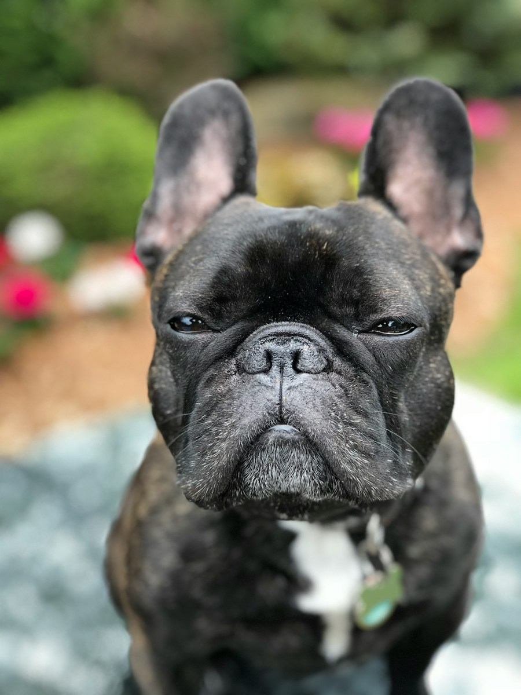

01
COMPAÑIA

EL GRAN AMIGO
Golden Retriever
Cariñoso, paciente y siempre dispuesto a compartir una aventura.
02
COMPAÑIA

PEQUEÑO CARISMATICO
Bulldog Francés
Sociable, juguetón, con una personalidad enorme en poco espacio.
03
PASTOREO

MENTE BRILLANTE
Border Collie
Ágil, atento y considerado una de las razas más inteligentes.
04
SABUESO

EXPLORADOR CURIOSO
Beagle
Su extraordinario olfato y energia lo llevan a descubrirlo todo.
05
TRABAJO

ESPIRITU DEL NORTE
Husky Siberiano
Atlético, independiente y famoso por su mirada azul penetrante.
06
SABUESO

VALIENTE Y SINGULAR
Dachshund
EL pequeño perro salchicha es decidido, leal y muy expresivo.
07
COMPAÑIA

ELEGANCIA NATURAL
Caniche
Inteligente y versátil, destaca por su aprendizaje y pelo rizado.
08
PASTOREO

ENERGIA COMPACTA
Corgi Galés
Alegre, despierto y reconocible por sus patas cortas y grandes orejas